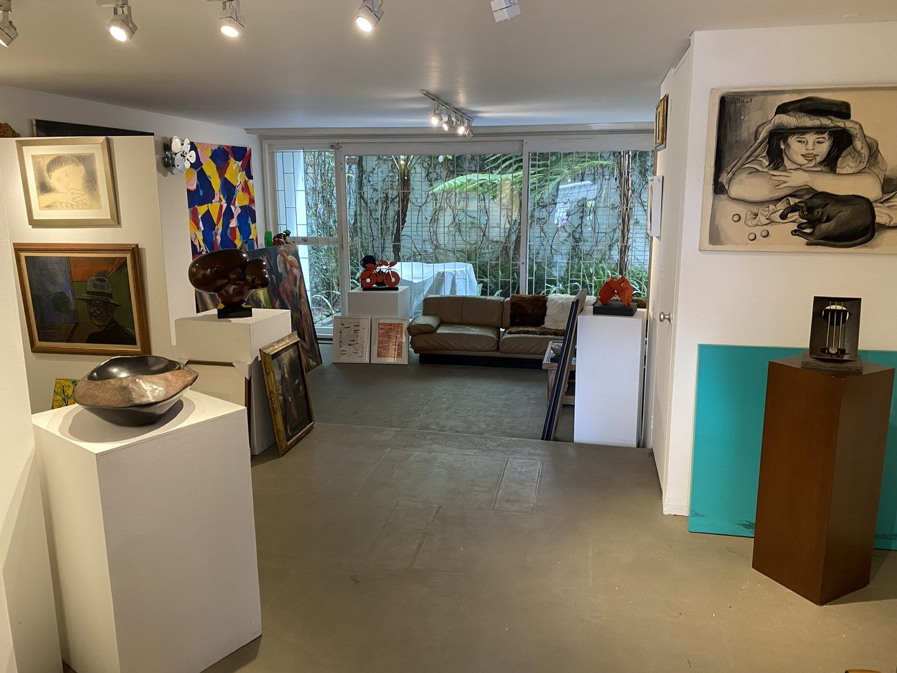
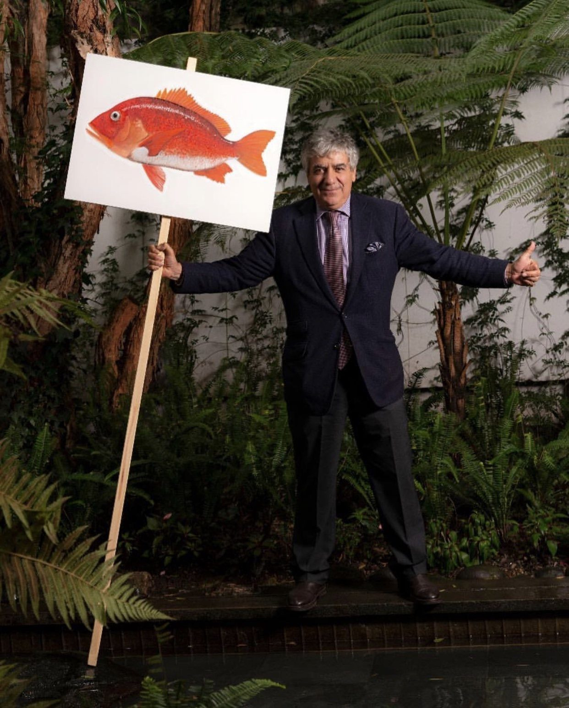
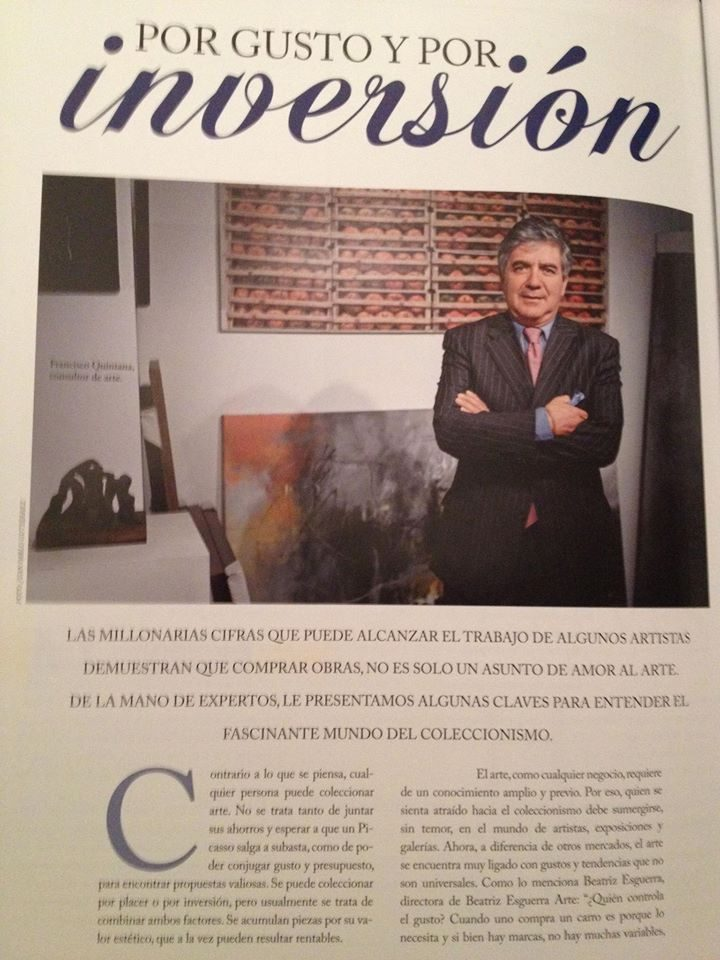
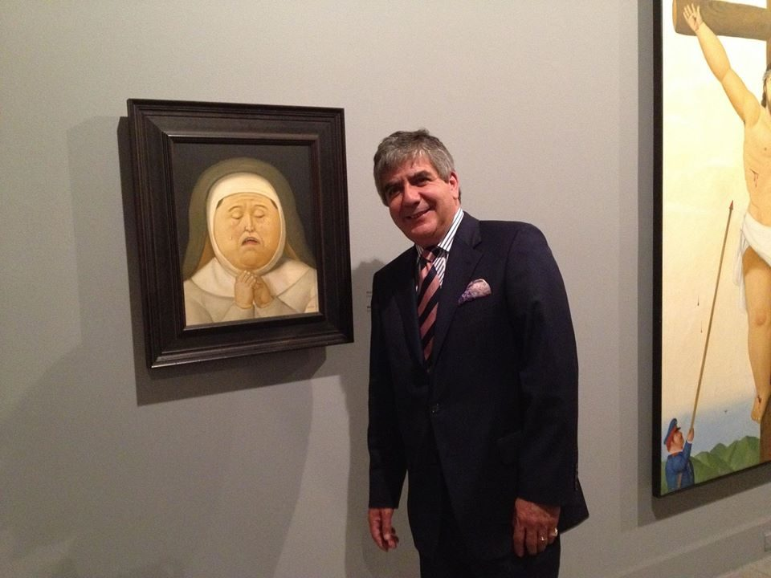
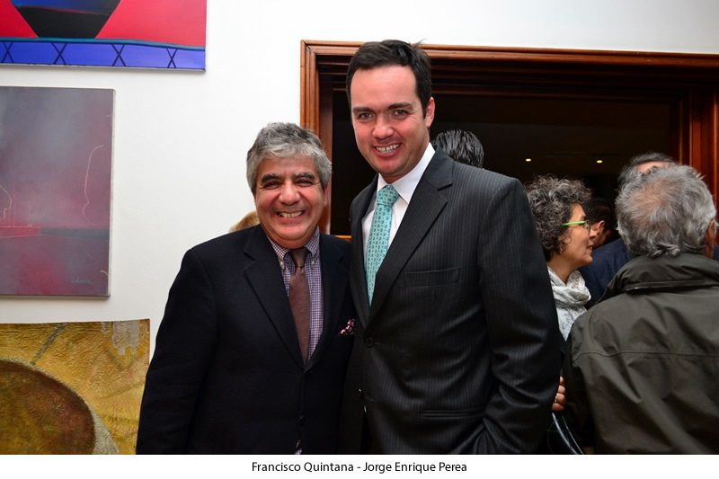

Quiénes Somos
Quiénes Somos

Francisco Quintana Calderón lleva en el mundo del arte desde 1985, empezó trabajando en la galería Quintana junto a sus hermanos, comercializando importantes artistas como Fernando Botero, Enrique Grau y Antonio Barrera. Además, teniendo participación en importantes ferias a nivel mundial como ARCO Madrid, Art Miami, FIAC Paris, entre otras. En el año 2000, decide independizarse y fundar la galería Francisco Quintana Arte enfocada en arte latinoamericano contemporáneo, comercializando arte en distintos mercados y para distintos públicos. Dada su experiencia en el sector también realiza curadurías y avalúos de arte.
Media


